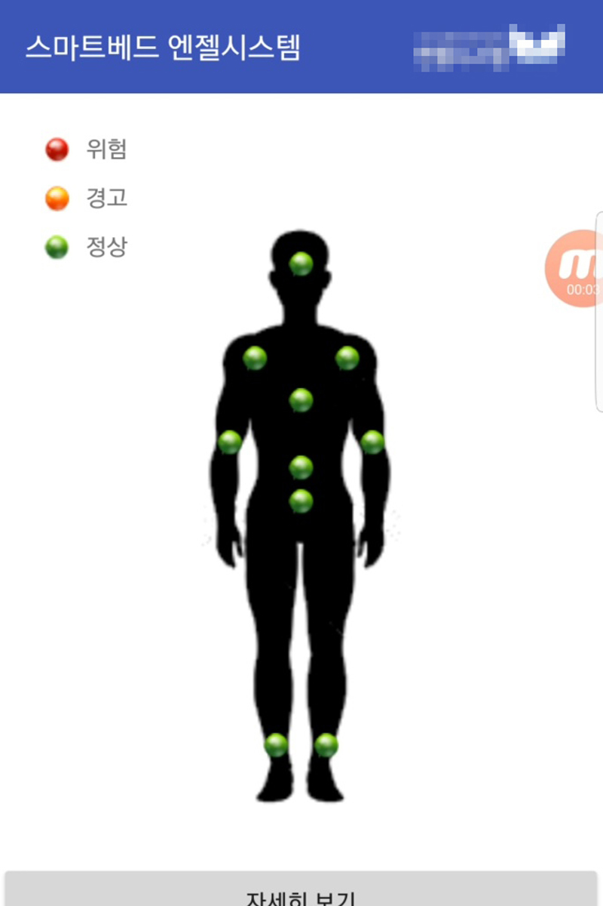

Mobile computing LAB에서 진행한 3인 프로젝트로 스마트 베드에 누운 사람의 자세를 판정하는 알고리즘에 관한 논문입니다. SCI급 저널인 Wireless Communications and Mobile Computing에 Determination of Lying Posture through Recognition of Multitier Body Parts라는 제목으로 등재되었고 총 2회 인용 되었습니다.
이 프로젝트에 적용된 기술은 아래와 같습니다.
스마트 베드 시스템을 구축할때 핵심적인 역할인 자세판정 알고리즘에 관한 논문입니다. 128개의 압력센서를 활용하여 자세를 판정하며 압력센서는 "이미지는 격자구조의 픽셀의 집합으로 이루어져 있다."라는 것에 영감을 받아 일정한 간격을 가지는 8 * 16의 구조로 배치하였습니다. 자세한 스마트베드에 관한 내용은 이 곳을 참고해주세요.
스마트 베드 실사
128개의 압력센서를 C# 프로그램에서 읽어와 머리, 어깨, 엉덩이를 검출 필터를 구현하여 검출하고 그것들의 위치 관계에 기반하여 자세를 판정하였습니다.
알고리즘은 크게 어깨를 찾고 그 후 엉덩이를 찾고 마지막으로 머리를 검출 필터로 찾아가는 흐름으로 진행됩니다. 어깨 필터는 3 * 2의 크기를 가지고 엉덩이 필터는 2 * 2의 크기를 가지며 머리 필터는 1 * 1의 크기를 가집니다.
어깨 필터
각각의 필터는 합산 필터로 최상단부터 각 크기만큼의 영역에 해당되는 압력값을 합산하여 최대값을 가지는 곳을 찾으려는 신체 부위라고 판정합니다. 어깨 필터의 경우 스마트 베드의 상반 부분에서만 작동합니다. 이렇게 검출된 세 부위들의 위치관계에 따라 자세를 판정하게 됩니다.
알고리즘은 C#으로 구현되었으며 위의 이미지는 판정결과와 현재 압력값을 시각화한 C# 프로그램입니다.